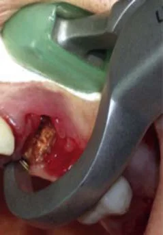
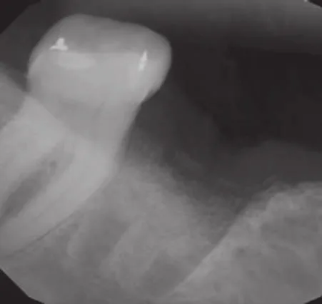

نسخه استخراجشده؛ ترجمه یا تأیید علمی انجام نشده است. وضعیت: captured
هدف کشیدن آتروماتیک روشن است: بیرون آوردن دندان بدون بردن استخوان با آن — و در ناحیهای که تیغهی باکالش کمتر از یک میلیمتر است، این هدف با تکنیک معمول به دست نمیآید.
تکنیک پریوتوم در چهار گام:
۱. محور طولی تیغهی پریوتوم در ناحیهی بیندندانی و در امتداد محور طولی ریشه وارد میشود — و دلیلش محافظت از صفحهی فاسیال استخوان است؛ پریوتوم هرگز روی صفحهی فاسیال به کار نمیرود. نوک تیغه درون کرست استخوان آلوئولار قرار میگیرد.
۲. پریوتوم ۱۰ تا ۳۰ ثانیه در جای خود میماند تا لیگامان زیر نیروی ثابت کش بیاید و سست شود (creep) و دندان به دیوارهی مقابل فشرده شود.
۳. سپس پریوتوم بیشتر به سمت پایین در فضای لیگامان پریودنتال و به سمت آپکس ریشه رانده میشود، اغلب با چکش و ضربهی سبک، تا دندان کمی لق شود.
۴. پس از آنکه پریوتوم بهعنوان یک گوهی متحرک به کار رفت، میتوان آن را به یک اهرم تبدیل کرد.
در دندان تکریشهی مخروطی، اگر پریوتوم هنگام پیشروی به سمت صفحهی کریبریفرم کمی چرخانده شود، نیروی جانبی به نیرویی رو به تاج تبدیل میشود و ریشه از ساکت بیرون رانده میشود.
به منطق این توالی دقت کن: پریوتوم ابتدا گوه است — یعنی دندان را از دیواره جدا میکند — و تنها پس از آن به اهرم تبدیل میشود. اهرم شدن زودهنگام، همان چیزی است که تیغهی باکال را میشکند.

سکشن کردن ریشهها. در دندانهای چندریشهای، برداشتن تماسهای پروگزیمال کشیدن را آسانتر میکند و سکشن کردن ریشهها تروما را به حداقل میرساند. سپس هر ریشه جداگانه با پریوتوم برداشته میشود.
منطقش ساده است: مولری که یکپارچه بیرون کشیده شود، ممکن است سپتوم بینریشهای را بشکند یا با خود ببرد؛ ریشههای جداشده هرکدام مسیر خودشان را دارند و استخوان بینریشهای سالم میماند.
دبریدمان ساکت. پس از کشیدن، ساکت باید کاملاً دبرید شود تا تمام باقیماندههای لیگامان پریودنتال و هر بافت نرم دیگر — مانند بافت گرانولاسیون — برداشته شود.
این مرحله اختیاری نیست: باقی ماندن بافت نرم در ساکت یعنی همان فضایی که باید با استخوان پر شود، از پیش اشغال شده است؛ بافت فیبروز باقیمانده، استخوانسازی را مختل و ترمیم را برای مدت طولانی کند میکند.
خونریزی از دیوارهها هم لازم است تا فاکتورهای رشد به محل برسند. اگر کافی نیست، صفحهی کریبریفرم را با کورت یا فرز روند کوچک سوراخ کن، بیآنکه دیوارهی باکال یا لینگوال را سوراخ کنی. در ناحیهی فورامن منتال و مولرهای مندیبل که آپکس به کانال نزدیک است، دبریدمان و پر کردن ساکت را با احتیاط انجام بده.
هشدار سینوس در مولرهای ماگزیلا. در ناحیهی مولر اول ماگزیلا، تقریباً ۴۲ درصد ریشهها درون خود سینوس قرار دارند؛ کشیدن این دندان ممکن است ممبران سینوس را پرفوره کند و پیوند ساکت، مادهی پیوند را به داخل سینوس ببرد.
یعنی در نزدیک به نیمی از ریشههای این ناحیه، کشیدن دندان و پیوند ساکت با یک ملاحظهی سینوسی همراه است — همان سینوسی که در یونیت ۸ خواندی.

نوع سؤال: ساخت کلمه · 3 خانه
حروف منبع: ش · چ · ک